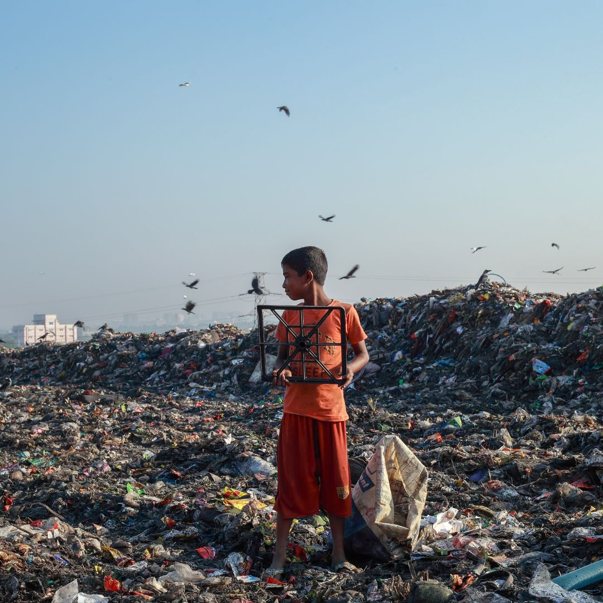
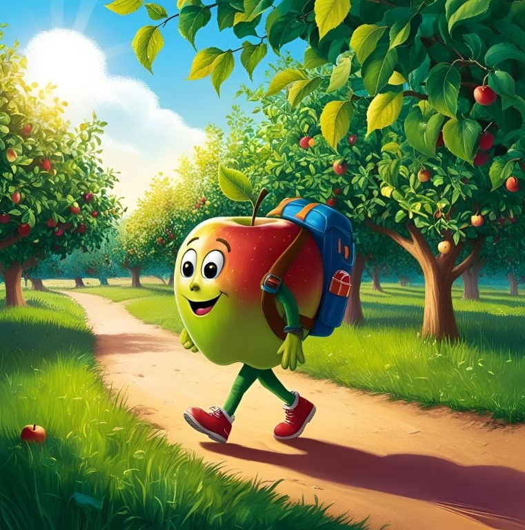

Oltre le sfide
Per decenni Nike è stata in prima linea nel campo dell'innovazione sostenibile, ma ora i traguardi sono: zero sprechi, zero emissioni di carbonio, e poi ancora oltre. Tutto è racchiuso nel motto "Oltre le sfide": ottimismo e tenacia, innovazioni sostenibili e azioni collettive per fare fiorire il pianeta.
Obiettivi per il 2025
0,5 milioni di tonnellate imperiali in meno di emissioni di gas serra, incrementando fino al 50% l'utilizzo di materiali ecologici: poliestere, cotone, pelle e gomma.
100% dei rifiuti destinati alle discariche recuperati, con almeno l'80% di scarti riciclati in prodotti Nike e altri beni.
Riduzione del 25% dell'utilizzo di acqua dolce per chilogrammo nella tintura e nel finissaggio dei tessuti.
Materiali con minore impatto
Con il riutilizzo di plastiche, filati e tessuti esistenti per la creazione di materiali del tutto nuovi, stiamo compiendo passi importanti per il nostro percorso verso l'azzeramento di sprechi ed emissioni di carbonio.
Soluzioni circolari
Proteggere il futuro dello sport significa pensare a nuovi modi di portare i prodotti nel mondo, farli durare e dare loro una nuova vita.
Lunga vita ai tuoi articoli
Ricicla e dona
Contribuisci a limitare gli sprechi donando o ricilando scarpe e articoli di abbigliamento sportivo usati.
Articoli ricondizionati
Offriamo un mix di resi idonei e scarpe restituite in buone condizioni per dare l'opportunità di acquistare scarpe leggermente usate a un prezzo inferiore.
Ri-creazione
Raccogliamo a livello locale prodotti vintage e di giacenze inutilizzate per ricavarne materiali per la creazione di articoli di nuova produzione con nuovi design.